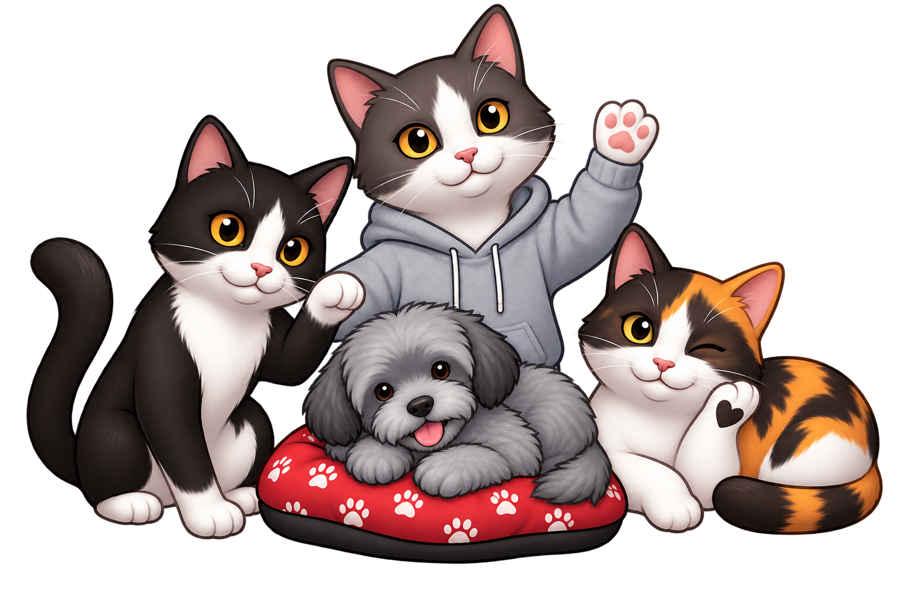
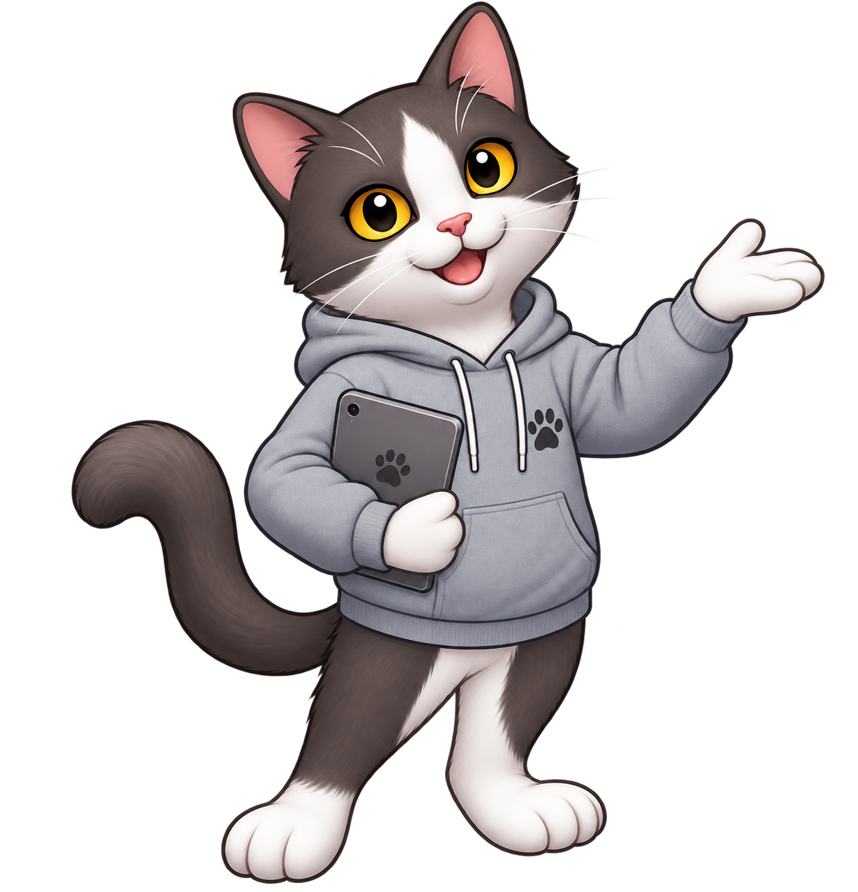
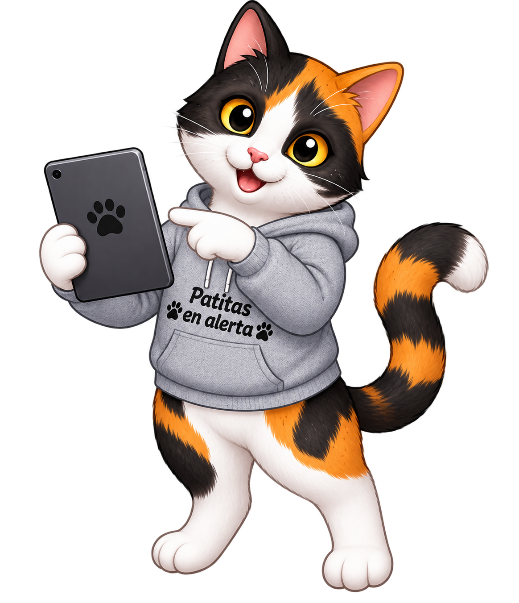
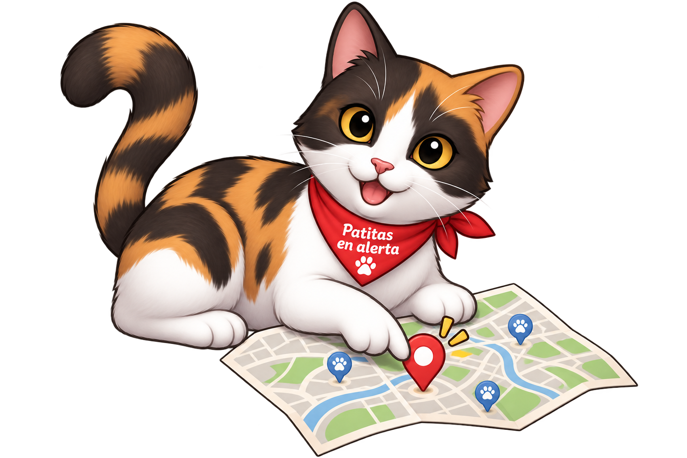
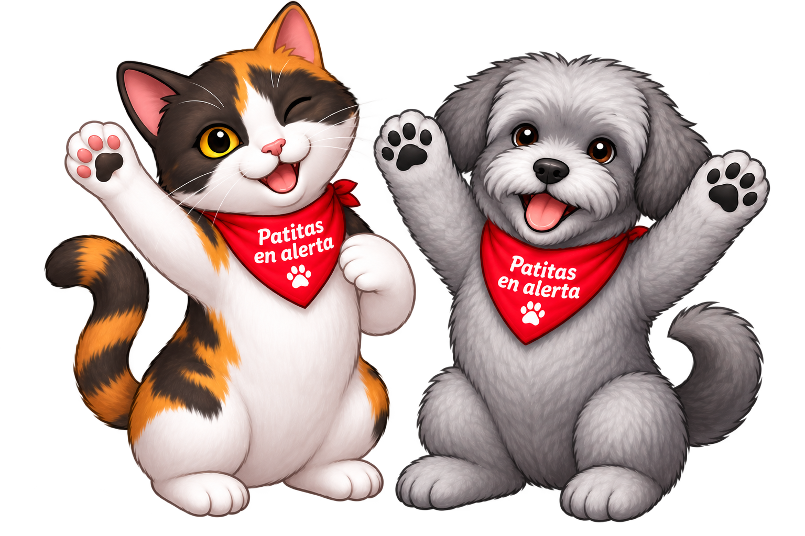

PASO 01
Entra sin fricción
Registro simple con email y contraseña. Cada rol entra por el mismo lugar, con lo que le corresponde.

PASO 02
Registra a su mascota
Nombre, especie y una foto alcanzan para empezar. Queda lista para vincularse a un reporte o a una visita veterinaria.

PASO 03
Reporta lo que ve
Perdida, encontrada o un evento de riesgo urbano — la categoría define a quién le llega primero.

PASO 04
Aparece en el mapa, en vivo
El reporte llega al panel del municipio y a los vecinos de la zona con mascotas compatibles.

PASO 05
El cierre que importa
Reencuentro, turno cumplido o evento atendido: el estado se actualiza y todos los involucrados lo ven.